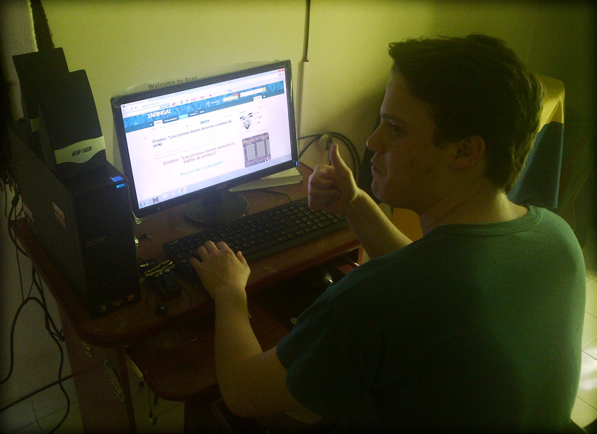

| Fecha de Publicación: 28/06/12 |
El Bressanismo apoya a los judíos
Pero miren que bonitos que están esta panda de infelices
"Hitler siempre fue muy cruel con aquellas personas que no tienen prepucio, aunque nosotros los vemos como personas blancas de más. Por eso mismo no sabemos que sentido tiene criticarlos aunque tengan una religión tan arcaica donde dicen que un tipo con barba los creó en 7 días de la nada misma. Que explicación tan coherente."
[Leer más] |
Fecha de publicación: 25/06/12 |
El Bressanismo y la moral hacia los negros
"Qué mirás, blanco de mierda"
"Como siempre supimos, los negros siempre han sido discriminados a través del tiempo. Por eso mismo, el Bressanismo da una palabra de aliento mostrando sus capacidades más allá de lo que un racista imaginaría. Aunque eso sí, discriminarlos y hacerlos trabajar forzosamente va a seguir siendo parte de nuestra cultura."
[Leer más] |
Fecha de publicación: 24/06/12 |
El Bressanismo abre su página web

Bressán en un post de Taringa!
"Bienvenidos a nuestra nueva página, donde podrán ver todos nuestros contenidos actualizados. Se abre desde hoy con todas las secciones para que cualquier discapacitado que quiera averiguar todo sobre nosotros y leer las porquerías que a muchas personas al pedo y sin cerebro les interesa. Espero que aprendan sobre nuestro partido político, que es obvio que no tendrá un buen futuro, pero cuantas más personas mejor."
[Leer más] |